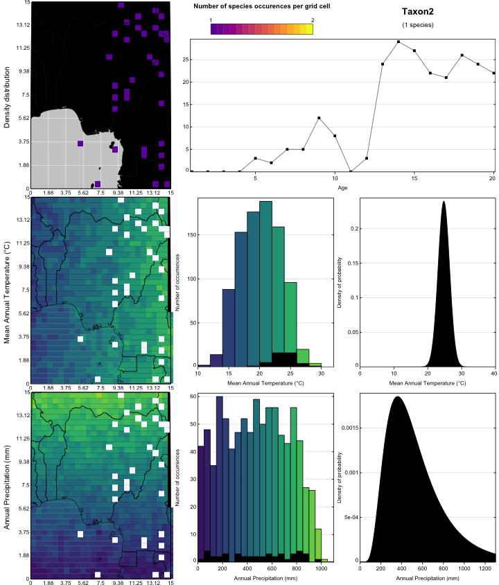

The goal of crestr is to produce probabilistic reconstructions of past climate change from fossil assemblage data. The approach is based on the estimation of conditional responses of studies bioproxy studied to climate paramters. These responses take the form of probability density functions (pdfs). The details of the method have been described in Chevalier et al. (2014) and the calibrated data presented in Chevalier (2019).
Installation
You can install the development version from GitHub with:
# install.packages("devtools")
devtools::install_github("mchevalier2/crestr")NOTE: This package is still in an early phase of development. The documentation is sparse and the functionalities limited. If you notice any bug, or if you would like to see some specific functions implemented, feel free to contact me at chevalier.manuel@gmail.com. I will try to limit as much as possible modifying existing functions and/or function parameters, but at the moment it cannot be excluded. My apologies for this.
Example
This is a basic example which shows you how to run crest with randomly generated data:
Let’s first have a look at the data. We have 20 fossil samples from which 7 taxa have been identified. The data are already expressed in percentages.
## the first 6 samples
head(crest_ex)
#> Age Taxon1 Taxon2 Taxon3 Taxon4 Taxon5 Taxon6 Taxon7
#> Sample_1 1 0 0 45 1 22 32 1
#> Sample_2 2 0 0 50 0 23 27 0
#> Sample_3 3 0 0 49 0 25 26 0
#> Sample_4 4 0 0 37 0 27 36 0
#> Sample_5 5 0 3 36 3 18 40 0
#> Sample_6 6 2 2 25 0 21 50 0
## the structure of the data frame
str(crest_ex)
#> 'data.frame': 20 obs. of 8 variables:
#> $ Age : int 1 2 3 4 5 6 7 8 9 10 ...
#> $ Taxon1: int 0 0 0 0 0 2 3 5 10 15 ...
#> $ Taxon2: int 0 0 0 0 3 2 5 5 12 8 ...
#> $ Taxon3: int 45 50 49 37 36 25 18 17 10 12 ...
#> $ Taxon4: int 1 0 0 0 3 0 0 6 15 14 ...
#> $ Taxon5: int 22 23 25 27 18 21 21 20 16 13 ...
#> $ Taxon6: int 32 27 26 36 40 50 53 47 37 38 ...
#> $ Taxon7: int 1 0 0 0 0 0 0 0 0 0 ...For each reconstruction, a proxy-species equivalency (‘pse’) table must be provided. Here, with the 7 fake taxa, it looks like:
crest_ex_pse
#> Level Family Genus Species ProxyName
#> 1 3 Randomaceae Randomus Taxon1 Taxon1
#> 2 3 Randomaceae Randomus Taxon2 Taxon2
#> 3 3 Randomaceae Randomus Taxon3 Taxon3
#> 4 3 Randomaceae Randomus Taxon4 Taxon4
#> 5 3 Randomaceae Randomus Taxon5 Taxon5
#> 6 3 Randomaceae Randomus Taxon6 Taxon6
#> 7 3 Randomaceae Randomus Taxon7 Taxon7Finally, one can specify which taxa should be used to reconstruct each variable:
crest_ex_selection
#> bio1 bio12
#> Taxon1 1 1
#> Taxon2 1 0
#> Taxon3 1 0
#> Taxon4 0 1
#> Taxon5 0 1
#> Taxon6 0 0
#> Taxon7 1 1To illustrate the process, we will reconstruct bio1 (mean annual temperature) and bio12 (annual precipitation) from these fake data. The description of the different parameters is available in the first vignette.
recons <- crest(
df = crest_ex, pse = crest_ex_pse, taxaType = 0,
climate = c("bio1", "bio12"), bin_width = c(2, 20),
shape = c("normal", "lognormal"),
selectedTaxa = crest_ex_selection, dbname = "crest_example"
)The climate sampled by the data can be assessed graphically using the figure
plot_climateSpace(recons)
Graphical tools aldo exist to assess which taxa should/could be used for each variable
plot_taxaCharacteristics(recons, taxanames='Taxon1')
Finally, the results can be visualised using the plot function and the reconstructed climate values can be accessed from the nested recons object:
names(recons)
#> [1] "inputs" "parameters" "modelling" "reconstructions"
#> [5] "misc"
lapply(recons$reconstructions, names)
#> $bio1
#> [1] "posterior" "uncertainties" "optima"
#>
#> $bio12
#> [1] "posterior" "uncertainties" "optima"
head(recons$reconstructions$bio1$optima)
#> Age optima mean
#> 1 1 15.69739 15.69943
#> 2 2 15.69739 15.69943
#> 3 3 15.69739 15.69943
#> 4 4 15.69739 15.69943
#> 5 5 17.06814 17.08516
#> 6 6 18.05812 18.02322
str(recons$reconstructions$bio1$optima)
#> 'data.frame': 20 obs. of 3 variables:
#> $ Age : int 1 2 3 4 5 6 7 8 9 10 ...
#> $ optima: num 15.7 15.7 15.7 15.7 17.1 ...
#> $ mean : num 15.7 15.7 15.7 15.7 17.1 ...
signif(recons$reconstructions$bio1$posterior[1:6, 1:6], 3)
#> [,1] [,2] [,3] [,4] [,5] [,6]
#> [1,] 1.00e+00 1.08e+00 1.15e+00 1.23e+00 1.30e+00 1.38e+00
#> [2,] 6.69e-13 8.79e-13 1.15e-12 1.51e-12 1.98e-12 2.58e-12
#> [3,] 6.69e-13 8.79e-13 1.15e-12 1.51e-12 1.98e-12 2.58e-12
#> [4,] 6.69e-13 8.79e-13 1.15e-12 1.51e-12 1.98e-12 2.58e-12
#> [5,] 6.69e-13 8.79e-13 1.15e-12 1.51e-12 1.98e-12 2.58e-12
#> [6,] 1.42e-15 1.93e-15 2.62e-15 3.56e-15 4.82e-15 6.52e-15
str(recons$reconstructions$bio1$posterior)
#> num [1:21, 1:500] 1.00 6.69e-13 6.69e-13 6.69e-13 6.69e-13 ...
plot(recons, climate = 'bio1')

References
- Chevalier, M., Cheddadi, R., Chase, B.M., 2014. CREST (Climate REconstruction SofTware): a probability density function (PDF)-based quantitative climate reconstruction method. Clim. Past 10, 2081–2098. 10.5194/cp-10-2081-2014
- Chevalier, M., 2019. Enabling possibilities to quantify past climate from fossil assemblages at a global scale. Glob. Planet. Change 175, 27–35. 10.1016/j.gloplacha.2019.01.016